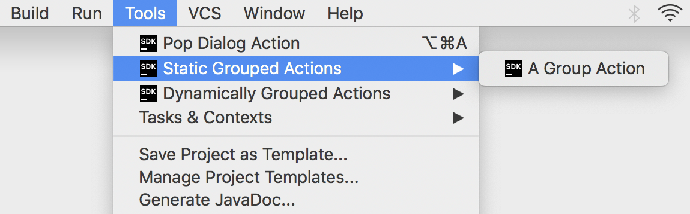
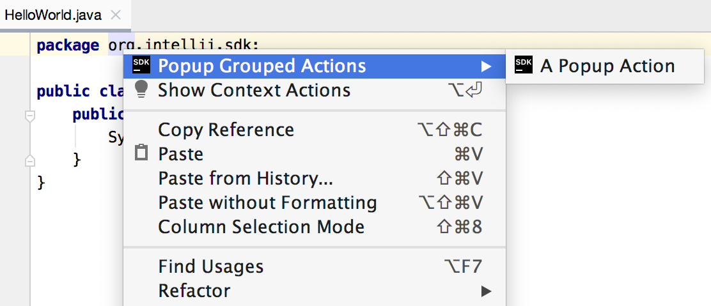
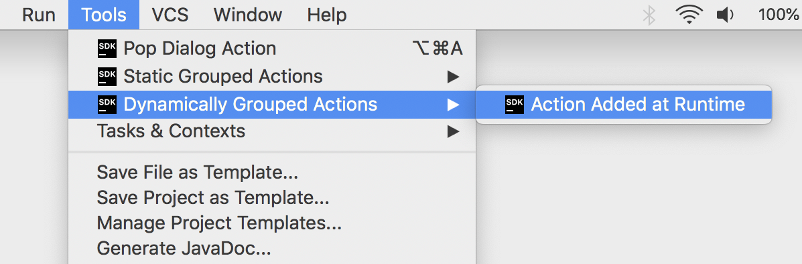

Grouping Actions
If an implementation requires several actions, or there are simply too many actions that overload the menu, the actions can be placed into groups.
This tutorial demonstrates adding an action to an existing group, creating a new action group, and action groups with a variable number of actions.
The sample code discussed in this tutorial is from the code sample action_basics.
Some content in this tutorial assumes the reader is familiar with the tutorial for Creating Actions.
- Simple Action Groups
- Implementing Custom Action Group Classes
- Action Groups with Variable Actions Sets
Simple Action Groups
In this first example, the action group will be available as a top-level menu item, and actions are represented as drop-down menu items. The group is based on a default IntelliJ Platform implementation.
Creating Simple Groups
Grouping can be registered by adding a <group> element to the <actions> section of a plugin’s plugin.xml file.
This example has no class attribute in the <group> element because the IntelliJ Platform framework will supply a default implementation class for the group.
This default implementation is used if a set of actions belonging to the group is static, i.e., does not change at runtime, which is the majority of cases.
The id attribute must be unique, so incorporating the plugin ID or package name is the best practice.
The popup attribute determines whether actions in the group are placed in a submenu.
The icon attribute specifies the FQN of an Icon object to be displayed.
No compact attribute is specified, which means this group will support submenus.
See Registering Actions in plugin.xml for more information about these attributes.
<group id="org.intellij.sdk.action.GroupedActions" text="Static Grouped Actions" popup="true" icon="SdkIcons.Sdk_default_icon">
</group>
Binding Action Groups to UI Components
The following sample shows how to use an <add-to-group> element to place a custom action group relative to an entry in the Tools menu.
The attribute relative-to-action references the action id for PopupDialogAction, which is not a native IntelliJ menu entry.
Rather PopupDialogAction is defined in the same plugin.xml file.
This group is placed after the single entry for the action PopupDialogAction, as defined in the tutorial Creating Actions.
<group id="org.intellij.sdk.action.GroupedActions" text="Static Grouped Actions" popup="true" icon="SdkIcons.Sdk_default_icon">
<add-to-group group-id="ToolsMenu" anchor="after" relative-to-action="org.intellij.sdk.action.PopupDialogAction"/>
</group>
Adding a New Action to the Static Grouped Actions
The PopupDialogAction implementation will be reused and registered in the newly created static group.
The id attribute for the reused PopupDialogAction implementation is set to a unique value, org.intellij.sdk.action.GroupPopDialogAction.
This value differentiates this new <action> entry from the id previously used to register this action implementation in the Creating Actions tutorial.
A unique id supports reuse of action classes in more than one menu or group.
The action in this group will display the menu text “A Group Action”.
<group id="org.intellij.sdk.action.GroupedActions" text="Static Grouped Actions" popup="true" icon="SdkIcons.Sdk_default_icon">
<add-to-group group-id="ToolsMenu" anchor="after" relative-to-action="org.intellij.sdk.action.PopupDialogAction"/>
<action class="org.intellij.sdk.action.PopupDialogAction" id="org.intellij.sdk.action.GroupPopDialogAction"
text="A Group Action" description="SDK static grouped action example" icon="SdkIcons.Sdk_default_icon">
</action>
</group>
After performing the steps described above the action group and its content will be available in the Tools menu.
The underlying PopupDialogAction implementation is reused for two entries in the Tools menu:
- Once for the top menu entry Tools | Pop Dialog Action with the action
idequal toorg.intellij.sdk.action.PopupDialogActionas set in the Creating Actions tutorial. - A section time for the menu entry Tools | Static Grouped Actions | A Group Action with the action
idequal toorg.intellij.sdk.action.GroupPopDialogAction.

Implementing Custom Action Group Classes
In some cases, the specific behavior of a group of actions needs to depend on the context. The solution is analagous to making a single action entry dependent on context.
The steps below show how to make a group of actions available and visible if certain conditions are met. In this case, the condition is having an instance of an editor is available. This condition is needed because the custom action group is added to an IntelliJ menu that is only enabled for editing.
Extending DefaultActionGroup
The DefaultActionGroup is an implementation of ActionGroup.
The DefaultActionGroup class is used to add child actions and separators between them to a group.
This class is used if a set of actions belonging to the group does not change at runtime, which is the majority of cases.
As an example, extend DefaultActionGroup
to create the CustomDefaultActionGroup class in the action_basics code sample:
public class CustomDefaultActionGroup extends DefaultActionGroup {
@Override
public void update(AnActionEvent event) {
// Enable/disable depending on whether user is editing...
}
}
Registering the Custom Action Group
As in the case with the static action group, the action <group> should be declared in the <actions> section of theplugin.xml file, for example, the action_basics plugin.
The declaration below shows:
- The presence of the
classattribute in the<group>element, which tells the IntelliJ Platform framework to useCustomDefaultActionGrouprather than the default implementation. - Setting the group’s
popupattribute to allow submenus. - The
<add-to-group>element specifies adding the group in the first position of the existingEditorPopupMenu.
<group id="org.jetbrains.tutorials.actions.ExampleCustomDefaultActionGroup"
class="org.jetbrains.tutorials.actions.CustomDefaultActionGroup" popup="true"
text="Example Custom DefaultActionGroup" description="Custom DefaultActionGroup Demo">
<add-to-group group-id="EditorPopupMenu" anchor="first"/>
</group>
Adding Actions to the Custom Group
As in Static Grouped Actions, the PopupDialogAction action is added as an <action> element in the <group> element.
In the declaration below, note:
- The
classattribute in the<action>element has the same FQN to reuse this action implementation. - The
idattribute is unique to distinguish it from other uses of the implementation in the Action System.
<group id="org.intellij.sdk.action.CustomDefaultActionGroup" class="org.intellij.sdk.action.CustomDefaultActionGroup" popup="true"
text="Popup Grouped Actions" description="Custom defaultActionGroup demo" icon="SdkIcons.Sdk_default_icon">
<add-to-group group-id="EditorPopupMenu" anchor="first"/>
<action class="org.intellij.sdk.action.PopupDialogAction" id="org.intellij.sdk.action.CustomGroupedAction"
text="A Popup Action" description="SDK popup grouped action example" icon="SdkIcons.Sdk_default_icon"/>
</group>
Providing Specific Behavior for the Custom Group
Override the CustomDefaultActionGroup.update() method to make the group visible only if there’s an instance of the editor available.
Also, a custom icon is added to demonstrate that icons can be changed depending on the action context:
public class CustomDefaultActionGroup extends DefaultActionGroup {
@Override
public void update(AnActionEvent event) {
// Enable/disable depending on whether user is editing
Editor editor = event.getData(CommonDataKeys.EDITOR);
event.getPresentation().setEnabled(editor != null);
// Take this opportunity to set an icon for the menu entry.
event.getPresentation().setIcon(SdkIcons.Sdk_default_icon);
}
}
After compiling and running the code sample above and opening a file in the editor and right-clicking, the Editing menu will pop up containing a new group of actions in the first position. The new group will also have an icon:

Action Groups with Variable Actions Sets
If a set of actions belonging to a custom group varies depending on the context, the group must extend ActionGroup.
The set of actions in the ActionGroup is dynamically defined.
Creating Variable Action Group
To create a group of actions with a variable number of actions, extend ActionGroup.
For example, as in the action_basics class DynamicActionGroup code:
public class DynamicActionGroup extends ActionGroup {
}
Registering a Variable Action Group
To register the dynamic menu group, a <group> attribute needs to be placed in the <actions> section of plugin.xml.
When enabled, this group appears at the entry just below the Static Grouped Actions in the Tools menu:
<group id="org.intellij.sdk.action.DynamicActionGroup" class="org.intellij.sdk.action.DynamicActionGroup" popup="true"
text="Dynamically Grouped Actions" description="SDK dynamically grouped action example" icon="SdkIcons.Sdk_default_icon">
<add-to-group group-id="ToolsMenu" anchor="after" relative-to-action="org.intellij.sdk.action.GroupedActions"/>
</group>
Adding Child Actions to the Dynamic Group
To add actions to the DynamicActionGroup, a non-empty array of AnAction instances should be returned from the DynamicActionGroup.getChildren() method.
Here again, reuse the PopupDialogAction implementation.
This use case is why PopupDialogAction overrides a constructor:
public class DynamicActionGroup extends ActionGroup {
@NotNull
@Override
public AnAction[] getChildren(AnActionEvent e) {
return new AnAction[]{ new PopupDialogAction("Action Added at Runtime",
"Dynamic Action Demo",
SdkIcons.Sdk_default_icon) };
}
}
After providing the implementation of DynamicActionGroup and making it return a non-empty array of actions, the third position in the Tools Menu will contain a new group of actions:
